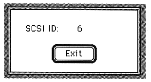

Return to previous page ｜ Return to menu ｜ Go to next page
-
TMP menu
- This section describes the TMP menu items.
●Stock TMP
- Creates a temporary file for the currently active waveform.
-
Play TMP
- Plays a temporary file.
This is enabled only when a temporary file has been created.
●Revert TMP
- Restores the data saved in TMP to the currently active window.
-
Preference menu
- This section explains the items in the Preference menu.
-
SCSI info
- Displays the current SCSI ID.

Return to previous page ｜ Return to menu ｜ Go to next page